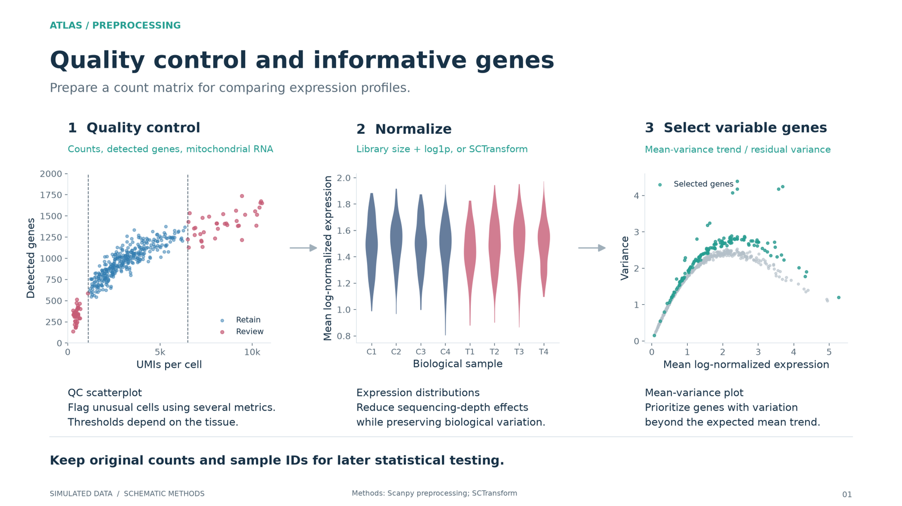
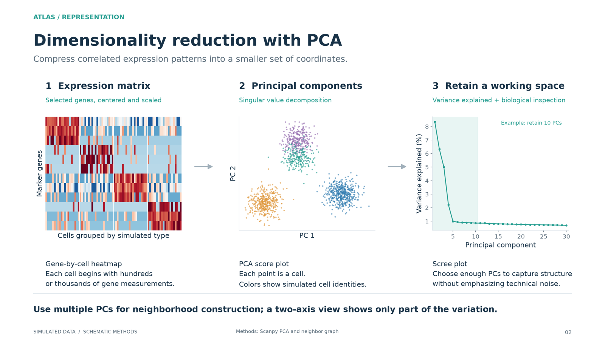
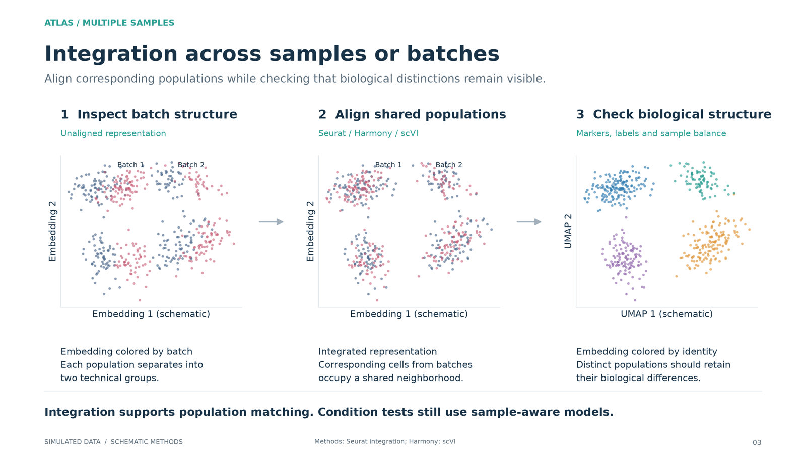
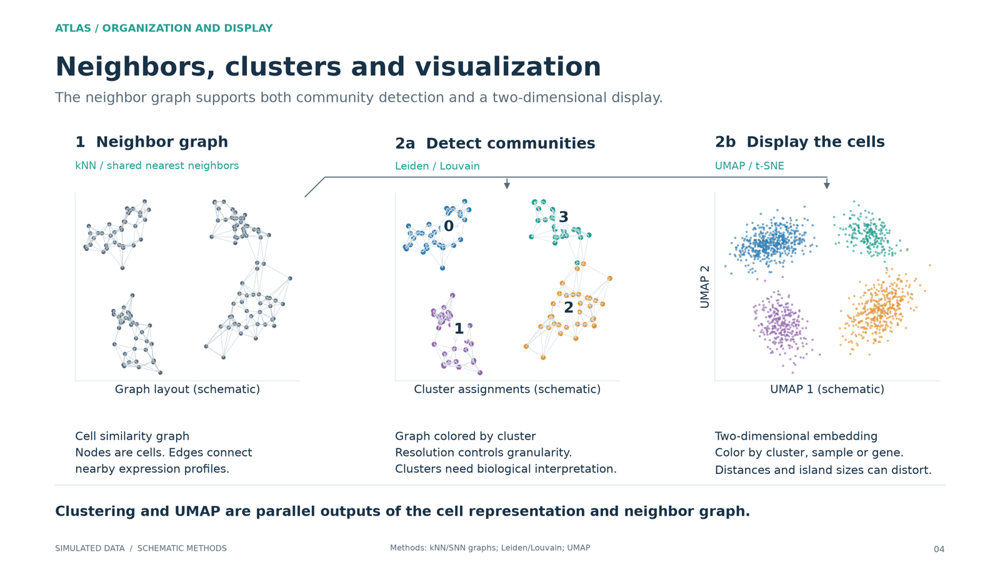
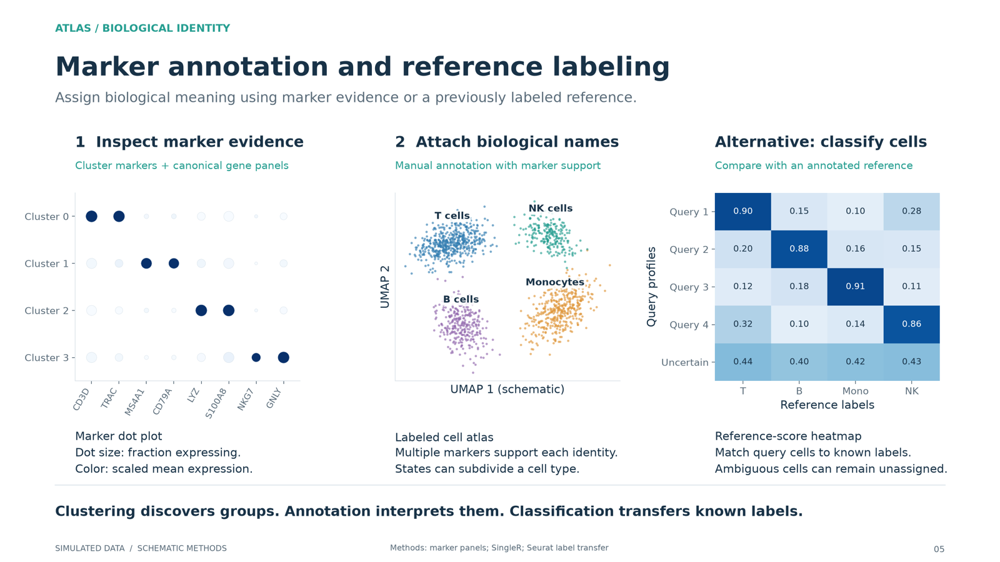
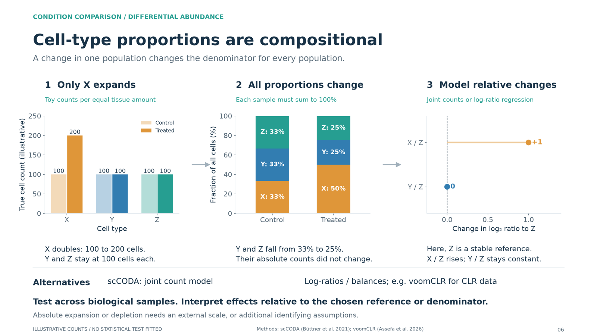
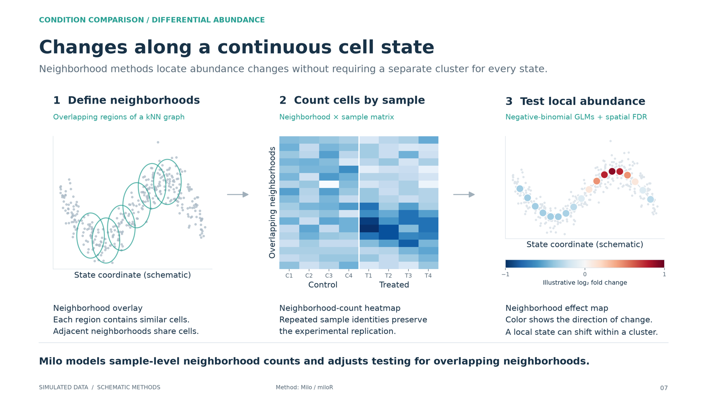
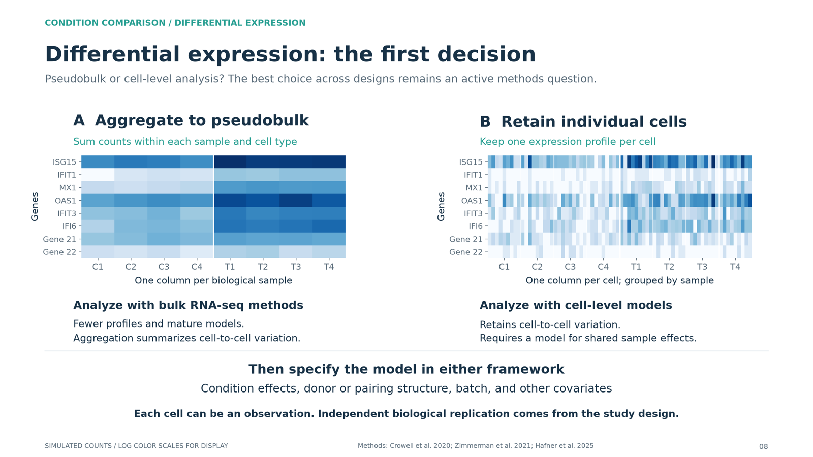
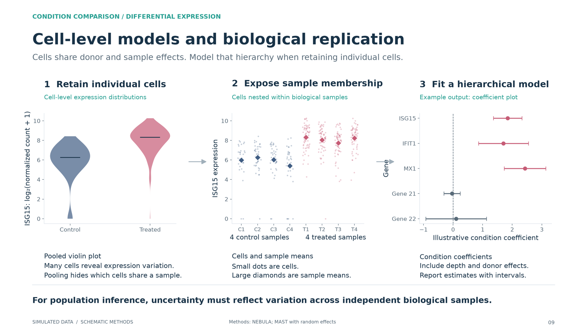
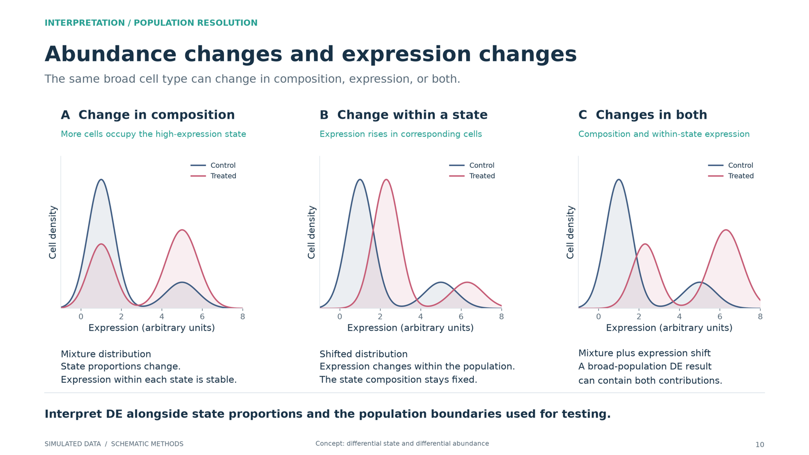

Bootcamp / Session 5 / 5.1
Session 5.1 · Lecture
A brief introduction to single-cell RNA-seq analysis
Manuel Garber walks through what a single-cell experiment measures and the standard path from cells to answers: quality control, variable genes, dimensionality reduction, clustering, naming cell types, and then the two questions most studies ask, whether cell-type proportions change and whether expression changes within a cell type.
Recording
Manuel’s lecture: a brief introduction to single-cell RNA-seq analysis.
Slides
What the lecture covers
- Where the data come from. Most single-cell data come from a microfluidic device that captures one cell per droplet and barcodes its transcripts.
- QC. Filter out empty droplets, dying cells and doublets before anything else.
- The goal. Identify cell types, to annotate a tissue, to find changes in their proportions across samples and conditions, to find state changes along a continuous trajectory, to find regulatory programs, or to build an atlas.
- Variable genes and dimensionality reduction. Choose the informative genes carefully, then compress them to a few dozen dimensions.
- Clustering. Group cells by transcriptional similarity, usually with graph-based clustering (Leiden or Louvain).
- Naming clusters. Three routes: strict differential expression of marker genes, biological intuition (ask your friend), and label transfer from another dataset or a foundation model.
- Proportion analysis. Did a cell type become more or less common?
- Differential expression, an unsolved problem. Option 1 goes back to bulk RNA-seq by pseudobulking: conservative and well calibrated, but it needs thresholds, enough cells per sample, and more samples. Option 2 treats every cell as a replicate: more power and fewer ad hoc decisions, but always unbalanced, sparse, and prone to false positives.
The analysis in ten figures
Each figure pairs a step of the analysis with the kind of plot it produces. All data in them are simulated. They illustrate the methods; they do not report biological findings or run the named packages.










Links
After the session
Two minutes of feedback, so the next session is pitched better. It also records your attendance, so fill it in whether you were in the room, on Zoom, or catching up on the recording.